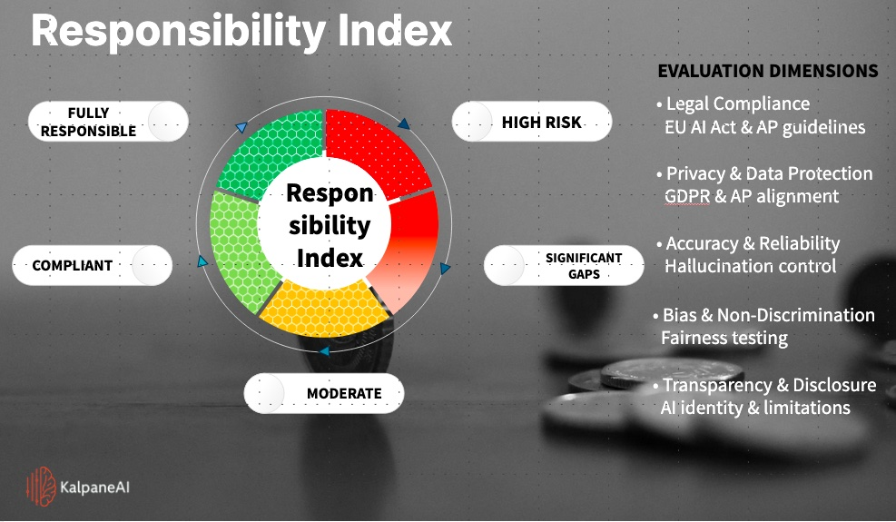

KalpaneAI bridges trusted domain knowledge and Responsible AI governance through two distinct solution tracks: Healthcare RAG and the KRAI Index.
KalpaneAI bridges the gap between advanced AI capability and real-world application through two focused offerings.
Domain-specialized Retrieval Augmented Generation that pulls from trusted medical manuals to support faster healthcare decisions.
KalpaneAI Responsible AI Index evaluates AI models against EU AI Act and Dutch governance expectations.
KalpaneAI applies RAG to trusted medical manuals and research papers to convert authoritative references into actionable insights.
The KalpaneAI Responsible AI Index (KRAI) evaluates large language models against Dutch and EU regulatory expectations across legal compliance, privacy, reliability, fairness, and transparency.

Foundation models, enterprise AI tools, open-weight ecosystems, vendor transparency, and deployment readiness.
GDPR principles, lawful processing, access control, traceability, and AP-aligned governance.
Reliability, validation layers, guardrails, fallback mechanisms, and control of plausible but incorrect outputs.
Fairness testing, transparency, non-discrimination, and mitigation of skewed or harmful outputs.
Meaningful oversight, accountability, interpretability, escalation paths, and trusted decision support.
KalpaneAI believes the future of AI will be defined not only by model capability but by responsible governance.